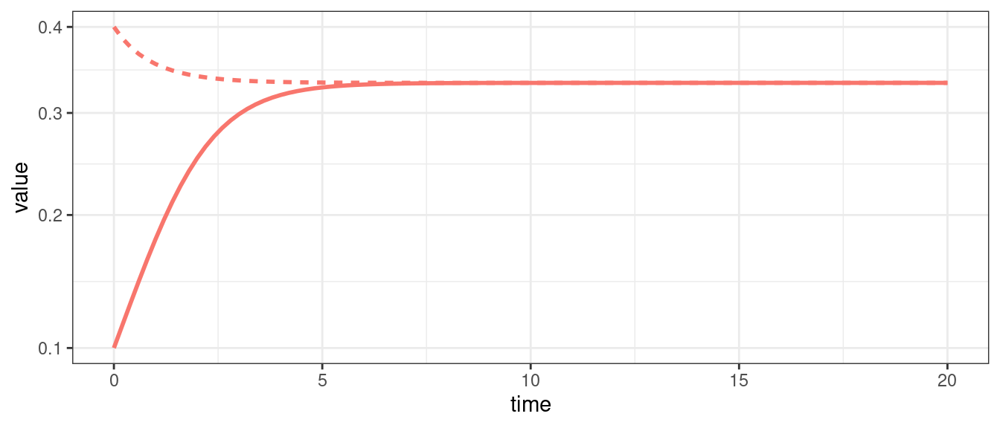
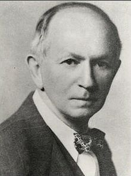
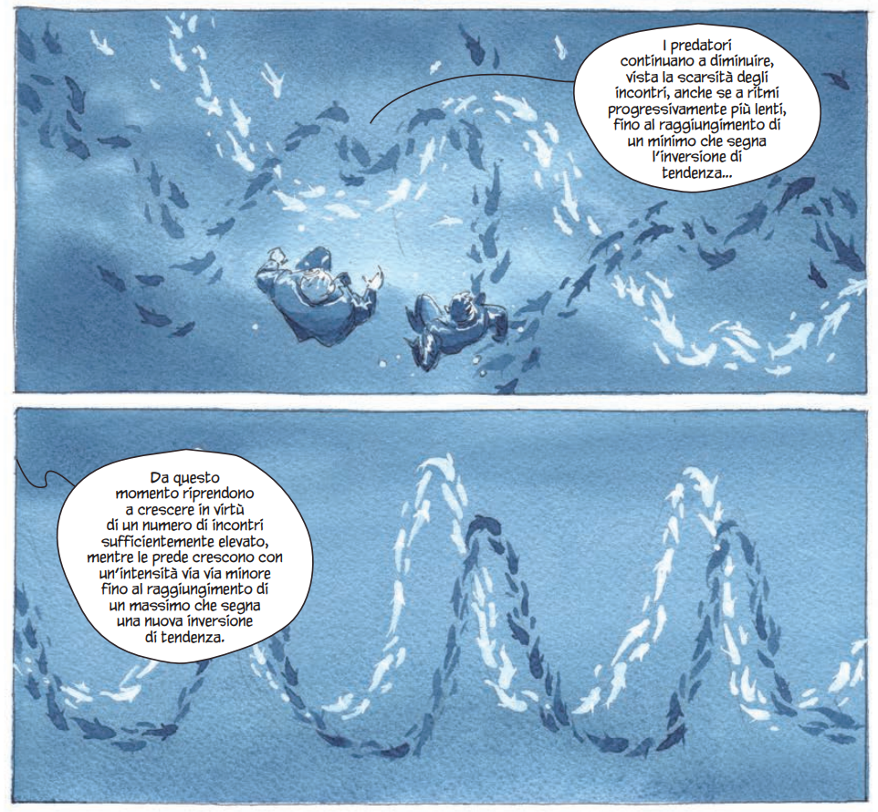
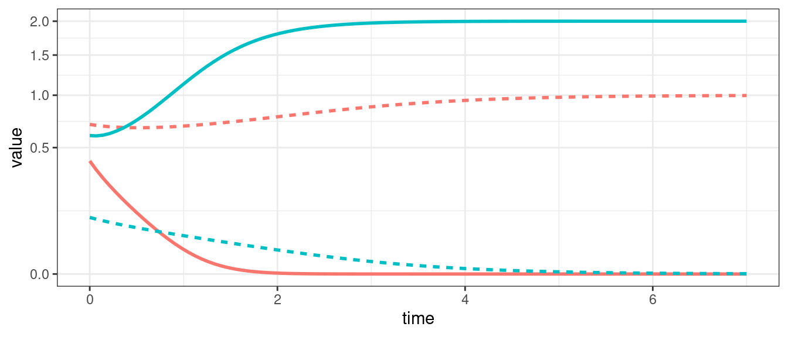
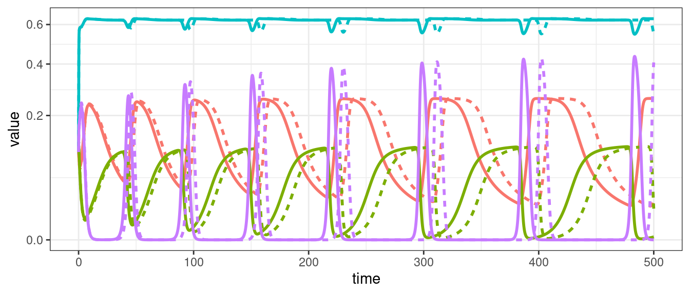
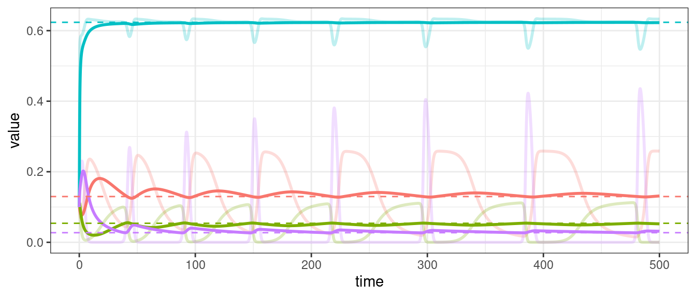
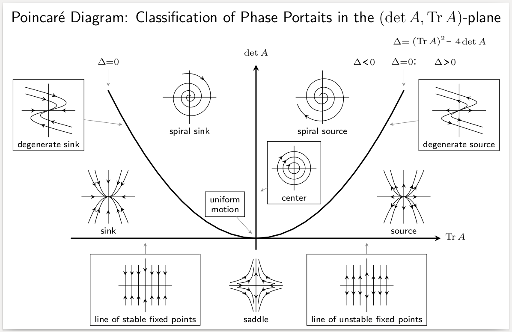

The Generalized Lotka-Volterra model
History

Alfred J. Lotka (1880-1949) was born to French-speaking American parents in Lemberg (then part of the Habsburg empire, now Lviv, Ukraine). He studied in France, Germany and England, receiving a BSc in 1901 and a DSc in 1912 from Birmingham university. He moved to the US in 1902, and worked at the US Patent office, as an editor of Scientific American, and as a statistician at the Metropolitan Life Insturance Company in NYC. He wrote more than a hundred papers and five books, spanning a wide range of topics. He’s best known for the book Elements of Physical Biology, his contributions to demography, and one of the first studies dealing with bibliometrics.
Starting in 1910, he investigated coupled differential equations relating to chemical as well as ecological dynamics. In 1920 he studied a system of two ODEs that gave rise to perpetual oscillations: “It was, therefore, with considerable surprise that the writer, on applying his method to certain special cases, found these to lead to undamped, and hence indefinitely continued, oscillations.” He went on to describe “1. A species of organism \(S_1\), a plant species, say, deriving its nourishment from a source presented in such large excess that the mass of the source may be considered constant during the period of time with which we are concerned. 2. A species \(S_2\), for example a herbivorous animal species, feeding on \(S_1\).”
The equations he had derived (and then studied in more detail) are now called Lotka-Volterra equations.

Vito Volterra (1860-1940) was born in Ancona (then part of the Papal State) in a poor Jewish family. The financial situation precipitated with the death of his father, when Vito was two. Vito and his mother went to live with relatives in Turin and then Florence. Volterra showed amazing mathematical talent at a very young age. Antonio Roiti, professor of physics in Florence, noticed the budding mathematician and hired him as his assistant, so that he could continue his studies. He went on to enroll at the Scuola Normale in Pisa, receiving a degree in Physics in 1882. At age 23 he was made full professor of Rational Mechanics in Pisa, and then in 1900 of Mathematical Physics in Rome. For thirty years, he contributed important studies in mathematics, and enriched academic life in Italy (for example, he was the first director of the National Center for Research). In 1931 he refused to take an oath of loyalty to the fascist regime (only 12 professors out of 1250 refused), and was therefore forced to resign (his take on the fascist enterprise: “Empires die, but Euclid’s theorems keep their youth forever”).
His interest in mathematical ecology is due to Umberto D’Ancona (his son-in-law), who had studied the trends in fisheries in the Adriatic sea before and immediately after WWI. In 1914-1918 fisheries in the Adriatic had stopped completely because of the conflict. D’Ancona had noticed that, while herbivorous fish had remained about constant, the piscivorous fish had increased dramatically in number. The problem piqued Volterra, who immediately published a sophisticated study, proposing the same equations studied by Lotka. In a short letter to Nature 1926, he stated the so-called “Volterra’s Effect” (which he termed “Law III”): “a complete closure of the fishery was a form of ‘protection’ under which the voracious fishes were much the better and prospered accordingly, but the ordinary food-fishes, on which these are accustomed to prey, were worse off than before.” This brief paper was a summary of a much more extensive study published in Italian.
Lotka-Volterra interactions
In 1927, Lotka wrote to Nature to raise the issue that the equations studied by Volterra and the figures presented in Volterra’s brief article were identical to those found in Elements of Physical Biology (published in 1925). He concluded: “It would be gratifying if Prof. Volterra’s publication should direct attention to a field and method of inquiry which apparently has hitherto passed almost unnoticed.”
Volterra graciously conceded “I recognize his priority, and am sorry not to have known his work, and therefore not have been able to mention it.” He however listed a few points in which the two authors had pursued different directions, and concluded “Working independently the one from the other, we have found some common results, and this confirms the exactitude and the interest in the position of the problem. I agree with him in his conclusions that these studies and these methods of research deserve to receive greated attention from scholars, and should give rise to important applications.”
 Vito Volterra and Umberto D’Ancona explore the Lotka-Volterra model. Taken from the fantastic La funzione del mondo, a graphic novel on Volterra by Bilotta and Grillotti.
Equations
We can write the GLV model for \(n\) interacting populations in component form as:
\[ \dfrac{d x_i(t)}{dt} = \dot{x}_i = x_i \left(r_i + \sum_j A_{ij} x_j \right) \]
and in matrix form as:
\[ \dot{x} = D(x) \left(r + Ax \right) \]
where \(x = x(t)\) is a (column) vector of length \(n\) containing the densities of all populations \(1, \ldots, n\) at time \(t\), \(r\) is a vector of intrinsic growth rates (or death rates, when negative), measuring the growth (decline) of population \(i\) when growing alone at low density, and \(A\) is a \(n \times n\) matrix of interaction coefficients. We use \(D(x)\) to denote the diagonal matrix with \(x\) on the diagonal.
Sometimes the model is written in a slightly different way, by bringing the vector \(r\) outside the parenthesis:
\[ \begin{aligned} \dot{x}_i &= x_i \left(r_i + \sum_j A_{ij} x_j \right)\\ &= r_i x_i \left(1 + \frac{1}{r_i} \sum_j A_{ij} x_j\right)\\ &= r_i x_i \left(1 + \sum_j B_{ij} x_j\right)\\ \end{aligned} \]
where we have defined \(B_{ij} = A_{ij} / r_i\). In matrix form, we obtain:
\[ \dot{x} = D(x \circ r) \left(1_n + Bx \right) \]
where \(\circ\) is the Hadamard (element by element) product. This notation is convenient when computing the equilibria of the system; the previous notation is more convenient when investigating their stability. We will alternate between the two notations, using \(A\) and \(B = D(r)^{-1} A\) for the two matrices.
Equilibria
If an equilibrium \(x^\star\) in which all populations are present exists, it must be the solution of
\[ \begin{aligned} 1_n + Bx^\star &= 0_n\\ Bx^\star &= - 1_n\\ x^\star &= -B^{-1} 1_n \end{aligned} \]
when the matrix \(B\) is invertible. Naturally, the equilibrium must be positive (called feasible) to be biologically attainable.
For example, consider:
\[ A = \begin{pmatrix} -4 & -1 & -3\\ -14 & -8 & -10\\ -6 & -15 & -13 \end{pmatrix} \quad r = \begin{pmatrix} 8\\ 32\\ 34 \end{pmatrix}\quad B = D(r)^{-1}A = \begin{pmatrix} -\frac{1}{2} & -\frac{1}{8} & -\frac{3}{8}\\ -\frac{7}{16} & -\frac{1}{4} & -\frac{5}{16}\\ -\frac{3}{17} & -\frac{15}{34} & -\frac{13}{34} \end{pmatrix} \] There is an equilibrium when at which all populations are present:
\[ x^\star = -A^{-1} r = -B^{-1}1_n = \begin{pmatrix} 1\\ 1\\ 1 \end{pmatrix} \] If the matrix \(B\) is rank-deficient (and thus singular) there are infinitely many equilibria; for example, if the rank of \(B\) is \(n-1\) there are infinitely many equilibria belonging to a line in \(\mathbb R^n\).
When \(B\) is nonsingular, the model admits at most one positive equilibrium in which all populations are present. However, there can be up to \(2^n-1\) equilibria in which one or more populations are absent/extinct. Call \(B^{(k,k)}\) the submatrix of \(B\) obtained by retaining the rows and columns indexed by the set \(k\). Then by solving
\[ B^{(k,k)} x^{(k)\star} = -1_{\|k\|} \]
we obtain an equilibrium for the subcommunity where only the populations in \(k\) are present (provided that the equilibrium is feasibile).
For the example above, we have:
\[ B^{(\{1,2\},\{1,2\})} = \begin{pmatrix} -\frac{1}{2}& -\frac{1}{8}\\ -\frac{7}{16} & -\frac{1}{4} \end{pmatrix} \]
and
\[ x^{(\{1,2\})\star} = -(B^{(\{1,2\},\{1,2\})})^{-1}1_2=\begin{pmatrix} \frac{16}{9}\\ \frac{8}{9} \end{pmatrix} \]
Therefore, the subsystem in which only the first two populations are present yields a feasible equilibrium.
Similarly,
\[ x^{(\{1,3\})\star} = \begin{pmatrix} \frac{1}{17}\\ \frac{44}{17} \end{pmatrix} \quad x^{(\{1\})\star} = \begin{pmatrix} 2\\ \end{pmatrix} \quad x^{(\{2\})\star} = \begin{pmatrix} 4\\ \end{pmatrix} \quad x^{(\{3\})\star} = \begin{pmatrix} \frac{34}{13}\\ \end{pmatrix} \]
The subsystem in which only populations 2 and 3 are present does not yield a feasible equilibrium.
Types of dynamics
For a single population, the GLV model can yield only two outcomes: unbounded growth, or convergence to an equilibrium; if the equilibrium is \(x^\star = 0\), we say that the population is extinct at the equilibrium.
When we have two populations, we can also observe neutral cycles (as in the classic LV predator-prey system), and bistability (i.e., one population survives, while the other goes extinct; the identity of the population going extinct depends on the initial conditions).

For three populations we can observe limit cycles.

For three or more populations (in the general case), or four or more populations (in competitive systems), we can have chaos (i.e., non-periodic oscillations).

Equilibrium as time-average
Suppose that \(x(t)\) has a periodic orbit, of period \(T\) (i.e., we assume \(x(0) = x(T)\)). Further, assume that the GLV has a feasible, interior equilibrium \(x^\star\). We want to calculate the average density for each population:
\[ \frac{1}{T} \int_0^T x(t) dt \]
First, we assume that \(x(t) > 0\) and write the dynamics of its logarithm:
\[ \dfrac{d \log(x_i(t))}{dt} = \dfrac{1}{x_i(t)}\dfrac{d x_i(t)}{dt} = r_i + \sum_j A_{ij} x_j(t) \]
In vector form:
\[ \dfrac{d \log{x(t)}}{dt}= r + A x(t) \]
Compute the average on both sides:
\[ \frac{1}{T}\int_0^T \frac{d \log(x(t))}{dt} dt= \frac{1}{T}\int_0^T \left(r + Ax(t) \right) dt \]
yielding:
\[ \frac{1}{T}(\log(x(T)) - \log(x(0))) = 0_n = r + A \left( \frac{1}{T} \int_0^T x(t) dt \right) \]
Note that the l.h.s. is zero because \(x(0) = x(T)\). Now rearrange:
\[ -r = A \left( \frac{1}{T} \int_0^T x(t) dt \right) \]
Multiplying by the matrix inverse:
\[ -A^{-1} r = x^\star = \frac{1}{T} \int_0^T x(t) dt \]
showing that the average density is in fact the equilibrium. With a similar argument, one can prove that if the trajectory stays in a compact space (i.e., in case of chaotic attractors), then the long-time average is still \(x^\star\).

Coexistence requires a feasible equilibrium
A necessary condition for the coexistence of populations is the existence of a positive (feasible) equilibrium.
Farkas’ lemma
Consider matrix \(A\), of size \(n \times n\), and the vector \(b\), of length \(n\).
Then either:
\[ \exists x \geq 0_n \quad \mid \quad Ax = b \]
or:
\[ \exists y \in \mathbb R^n \quad \mid \quad A^T y \geq 0 \;\text{and}\; b^T y < 0 \]
Suppose that the system does not have a feasible equilibrium, i.e., an \(x^\star > 0_n\) such that \(Ax^\star = -r\). Then, there must exist a \(y\) such that \(A^T y \geq 0_n\) and \(r^T y > 0\).
But then, consider the function:
\[ P = \prod_i x_i^{y_i} \]
The function is positive when all \(x_i > 0\). Differentiating with respect to time, we find:
\[ \begin{aligned} \dot{P} &= \sum_i\left( y_i \dot{x}_i x_i^{y_i - 1} \prod_{j \neq i} x_j^{y_j} \right)\\ &=\sum_i\left( y_i \frac{\dot{x}_i}{x_i} \prod_{j} x_j^{y_j} \right)\\ &= P \sum_i y_i \left(r_i + \sum_j A_{ij} x_j\right)\\ &= P (y^T r + y^T A x) \end{aligned} \]
but by Farkas’ lemma, we have that \(y^T r > 0\) and \(y^TA \geq 0_n^T\); then \(P\) always grows in time, and eventually diverges to \(\infty\).
Note that \(P(t) \to \infty\) requires some \(x_i^{y_i}(t) \to \infty\), which happens when either \(x_i(t) \to \infty\) and \(y_i > 0\) (i.e., a population grows without bound), or \(x_i(t) \to 0\) and \(y_i < 0\) (i.e., a population goes extinct). Thus, in the absence of an equilibrium, trajectories can either diverge to infinity, or one or more populations can go extinct.
A feasible equilibrium is therefore a necessary condition for coexistence.
Local stability
We want to determine whether an equilibrium point is locally asymptotically stable; this means that, for sufficiently small perturbations of the equilibrium, \(x(0) = x^\star + \epsilon\), we have that \(\lim_{t \to \infty} x(t) = x^\star\). Let’s start by considering the case of a single population:
- Take an ODE \(dx/dt = f(x)\)
- The population is resting at an equilibrium \(x^\star\)
- We perturb the population abundance, and track the dynamics when starting at \(x(0) = x^\star + \epsilon\), where \(\epsilon\) (the perturbation) is taken to be sufficiently small \(\| \epsilon \| \ll 1\)
- We write \(\Delta x(0) = x(0) - x^\star\)
- We derive the dynamics for \(\Delta x\).
By chain rule,
\[ \begin{aligned} \dfrac{d \Delta x}{dt} &= \dfrac{d \Delta x}{dx} \dfrac{d x}{dt} \\ &= 1 \dfrac{d x}{dt}\\ &= f(x)\\ &= f(\Delta x + x^\star) \end{aligned} \]
Where we have substituted \(x = \Delta x + x^\star\).
- Now we approximate the function \(f(\Delta x + x^\star)\) by Taylor-expanding.
Taylor series
We can approximate the behavior of a (infinitely differentiable) function in the vicinity of a point \(a\) by a power series:
\[ f(x) = f(a) + \dfrac{1}{1!} \left. \dfrac{df(x)}{dx} \right|_a (x-a)+ \dfrac{1}{2!} \left. \dfrac{d^2f(x)}{dx^2} \right|_a (x-a)^2+ \dfrac{1}{3!} \left. \dfrac{d^3f(x)}{dx^3} \right|_a (x-a)^3 + \ldots \]
where \(n! = n (n-1)(n-2)\ldots 1\) is the factorial function and the derivatives are evaluated at \(a\). When we choose \(a=0\), this is called the Maclaurin series.
Example
Expand \(e^x\) around \(0\):
\[ \begin{aligned} e^x &= e^0 + \left. e^x\right|_0 x + \frac{1}{2}\left. e^x\right|_0 x^2 + \frac{1}{6}\left. e^x\right|_0 x^3 + \ldots\\ &=1 + x + \frac{1}{2} x^2 + \frac{1}{6}x^3 + \ldots\\ &=\sum_{k=0}^\infty \frac{x^k}{k!} \end{aligned} \]
We want to Taylor-expand \(f(x) = f(\Delta x + x^\star)\) around \(x^\star\):
\[ f(x) = f(x^\star) + \left.\dfrac{d f(x)}{d x}\right|_{x^\star} (x - x^\star) + \dfrac{1}{2}\left.\dfrac{d^2 f(x)}{d x^2}\right|_{x^\star} (x - x^\star)^2 + \ldots \]
Note that \(f(x^\star) = 0\) by the definition of an equilibrium. If the deviation is small, we can neglect all the higher-order terms, obtaining:
\[ \dfrac{d \Delta x}{dt} = f(x) \approx \left.\dfrac{d f(x)}{d x}\right|_{x^\star} \Delta x \]
which is the equation of the exponential growth model, with \(\rho = \left.\dfrac{d f(x)}{d x}\right|_{x^\star}\). Then, the solution is \(\Delta x(t) = \Delta x(0) e^{\rho t}\), and the deviation from the equilibrium eventually reaches zero (i.e., the system goes back to \(x^\star\)) whenever \(\rho < 0\).
For example, take the logistic growth model \(\dot{x} = x(1-x)\), and evaluate the stability of \(x^\star = 1\); we have:
\[ \left.\dfrac{d f(x)}{d x}\right|_{x^\star} = \left.\dfrac{d (x - x^2)}{d x}\right|_{x^\star} = \left.(1 - 2x)\right|_{x^\star} = -1 \]
and thus the equilibrium is locally asymptotically stable. Locally, because we have considered very small deviations from the equilibrium, and asymptotic because convergence only happens eventually.
In analogy with the Taylor-expansion of functions of a single variable, we can write:
\[ f_i(x^\star + \Delta x) = f_i(x^\star) + \sum_k \left. \dfrac{\partial f_i(x)}{\partial x_k} \right|_{x^\star} \Delta x_k + \dfrac{1}{2} \sum_{k}\sum_{l} \left. \dfrac{\partial^2 f_i(x)}{\partial x_k \partial x_l} \right|_{x^\star} \Delta x_k \Delta x_l + \cdots \]
As before, \(f_i(x^\star) = 0\), and if we take only the second term (i.e., the term linear in \(\Delta x\)) we can approximate the function as:
\[ f_i(x^\star + \Delta x) \approx \sum_k \left. J_{ik} \right|_{x^\star} \Delta x_k \]
Where we have defined the Jacobian matrix \(J\):
\[ J_{ij} = \dfrac{\partial f_i(x)}{\partial x_j} \]
For each equilibrium of the system, we can obtain a different community matrix (the name is due to Richard Levins) \(M\):
\[ M = \left. J \right|_{x^\star} \]
As such, a system of ODEs has a single Jacobian, and as many community matrices as there are equilibria. As before, we assume that we have slightly perturbed the system at equilibrium, \(x(t) = x^\star + \Delta x\), where \(\Delta x\) is assumed to be small, and then we approximate the dynamics:
\[ \dfrac{d\Delta x}{dt} \approx \left. J \right|_{x^\star} \Delta x \]
i.e., we need to solve a linear system of ODEs.
Solving systems of linear ODEs
Consider the system of first-order, autonomous ODEs:
\[ \dfrac{dx}{dt} = Ax \]
If the matrix \(A\) is diagonalizable, we can decompose the matrix as:
\[ A = Q \Lambda Q^{-1} \]
We define a new system of equations, by changing the variables:
\[ y = Q^{-1}x\quad x = Q y \]
Then, by chain rule:
\[ \dfrac{dy}{dt} = Q^{-1} \dfrac{d x}{dt} = Q^{-1}Q \Lambda Q^{-1} x= \Lambda Q^{-1} x = \Lambda y \]
We have decoupled all equations: now the \(y_i\) grow or decline independently of each other.
\[ \dfrac{dy_i}{dt} = \lambda_i y_i \]
This is in fact the equation for the exponential growth/decay, with solution \(y_i(t) = y(0) e^{\lambda_i t}\).
We can bring these solutions back to the original form:
\[ y(t) = e^{\Lambda t} y(0) \]
where \(e^{\Lambda t}\) is a diagonal matrix:
\[ e^{\Lambda t}= \begin{pmatrix} e^{\lambda_1 t} & 0 & \cdots &0\\ 0 & e^{\lambda_2 t} & \cdots &0\\ \cdots & \cdots & \cdots & \cdots\\ 0 & 0 & \cdots & e^{\lambda_n t}\\ \end{pmatrix} \]
Then:
\[ x(t) = Q y(t) = Q e^{\Lambda t} y(0) = Q e^{\Lambda t} Q^{-1} x(0) \]
Allowing to easily compute the solution for any linear systems of ODEs.
Stability of the origin
Suppose that \(\lambda_i\) is a real, negative number; then \(\lim_{t \to \infty}e^{\lambda_i t} = 0\). If \(\lambda_i\) is positive, on the other hand, then \(\lim_{t \to \infty}e^{\lambda_i t} = \infty\). Thus, if any of the \(\lambda_i > 0\), the system will initially move toward \(\infty\) in the direction specified by the corresponding eigenvector.
Whenever \(\lambda_i\) is complex (e.g., generically, when \(A\) is not symmetric), then we need to consider:
\[ e^{\alpha t + i \beta t} = e^{\alpha t} e^{i \beta t} = e^{\alpha t} (\cos \beta + i \sin \beta )t \]
where we have used Euler’s formula. Importantly, \((\cos \beta + i \sin \beta )\) is bounded, and in fact its real (imaginary) part is \(\leq 1\) (the equation describes a unit circle in the complex plane). Then, \(\lim_{t \to \infty} e^{\alpha t + i \beta t} = 0\) if \(\alpha < 0\).
Therefore, the vector \(0_n\) is an asymptotically stable equilibrium of the system \(\dfrac{dx}{dt} = A x\) if and only if all the eigenvalues of \(A\) have negative real part.
Stability of the origin for \(A_{2 \times 2}\)
As we have shown above, the eigenvalues of a \(2\times2\) matrix \(A\):
\[ A = \begin{pmatrix} a & b\\ c & d \end{pmatrix} \]
are:
\[ \lambda = \dfrac{a + d \pm \sqrt{4bc + (a-d)^2}}{2} \]
We can rewrite the values as:
\[ \lambda = \dfrac{1}{2} \left(\text{Tr}A \pm\sqrt{\left(\text{Tr}A \right)^2 - 4 \det A} \right) \]
If the trace is negative, and the determinant positive, then the eigenvalues have negative real part, and thus the origin is stable for the corresponding system of linear ODEs. In fact, knowing the trace and the determinant is in this case sufficient to determine the type of dynamics around equilibrium:

To probe the local asymptotic stability of the equilibria, we can:
- Calculate the Jacobian matrix, \(J\)
- Plug in an equilibrium, obtaining the corresponding community matrix \(M\)
- Compute the eigenvalues of \(M\), \(\lambda_i\)
- If all the eigenvalues have negative real part, \(\Re (\lambda_i) < 0\), then the equilibrium is locally asymptotically stable; if any \(\Re (\lambda_i) > 0\), then the equilibrium is unstable, and there are small perturbations that will amplify (at least initially)
For the GLV system with equilibrium \(x^\star = -A^{-1}r > 0_n\), we have:
\[ J_{ii} = \dfrac{\partial (r_i x_i + \sum_j A_{ij} x_i x_j)}{\partial x_i} = r_i + \sum_j A_{ij} x_j + A_{ii} x_i \]
At equilibrium, we have:
\[ r_i + \sum_j A_{ij} x_j^\star = 0 \]
and therefore
\[ M_{ii} = \left. J_{ii} \right|_{x^\star} = A_{ii} x_i^\star \]
Similarly,
\[ J_{ii} = \dfrac{\partial (r_i x_i + \sum_j A_{ij} x_i x_j)}{\partial x_j} = A_{ij} x_i \]
and thus
\[ M_{ij} = \left. J_{ij} \right|_{x^\star} = A_{ij} x_i^\star \]
Putting them together, we obtain:
\[ M = \left. J \right|_{x^\star} = D(x^\star)A \]
and thus the equilibrium is l.a.s. if and only if all of the eigenvalues of \(D(x^\star)A\) have negative real part.
If the matrix \(A\) is symmetric, any feasible equilibrium is stable if and only if the eigenvalues of \(A\) are all negative (i.e., \(A\) is negative definite). To prove this, take \(A = A^T\) and consider the similarity transformation
\[ \begin{aligned} D(x^\star)^{-\frac{1}{2}} D(x^\star) A D(x^\star)^{\frac{1}{2}}\\ D(x^\star)^{\frac{1}{2}} A D(x^\star)^{\frac{1}{2}}\\ \end{aligned} \]
The matrices \(D(x^\star) A\) and \(D(x^\star)^{\frac{1}{2}} A D(x^\star)^{\frac{1}{2}}\) are similar, and thus have the same eigenvalues; the matrices \(A\) and \(D(x^\star)^{\frac{1}{2}} A D(x^\star)^{\frac{1}{2}}\) are congruent, and thus have the same number of positive, negative and zero eigenvalues by Sylvester’s law of inertia.
A symmetric matrix is negative definite if all its submatrices obtained by deleting a set of rows and the corresponding columns are negative definite as well. Then, if \(A = A^T\) is negative definite, a) a feasible equilibrium is locally stable, and b) for any subsystem, feasibility implies local stability.
Note that this is generally not the case for nonsymmetric matrices \(A\), in which case we could have that \(A\) has all eigenvalues with a negative real part, while \(D(x^\star)A\) has some eigenvalues with positive real part (or viceversa). For example, take
\[ A = \begin{pmatrix} -3 & 4 & 0\\ 5 & -2 & -2\\ 5 & 5 & -3 \end{pmatrix} \quad \lambda(A) = \{-7,\frac{1}{2}(-1 \pm i \sqrt{15}) \} \]
and the equilibrium \(x^\star = (1,1,1/2)^T\) (obtained for \(r = (-1, -2, -17/2)\)); we obtain:
\[ M = D(x^\star)A = \begin{pmatrix} -3 & 4 & 0\\ 5 & -2 & -2\\ \frac{5}{2} & \frac{5}{2} & -\frac{3}{2} \end{pmatrix} \quad \lambda(B) = \{-7,\frac{1}{4}(1 \pm i\sqrt{31}) \} \]
Thus, the equilibrium is not locally asymptotically stable.
Global asymptotic stability
In certain models, we can show that whenever all the populations start at a positive value, they will always reach a certain equilibrium \(x^\star\). In this case, we say the equilibrium is globally asymptotically stable.
Because solving differential equations is in general very difficult, and in many cases of interest impossible, we employ a proxy function, called a Lyapunov function.
Lyapunov functions
We want to prove that all trajectories originating at \(x(0) > 0\) eventually converge to \(x^\star\). If we can find a function \(V\) such that:
- \(V(x(t)) \geq 0\) for all \(x(t) > 0\)
- \(V(x(t)) = 0\) if and only if \(x(t) = x^\star\)
- \(\dfrac{d V(x(t))}{dt} \leq 0\) for all \(x(t)\) and
- \(\dfrac{d V(x(t))}{dt} = 0\) if and only if \(x(t) = x^\star\)
then \(x^\star\) is globally asymptotically stable: all trajectories starting at a positive point will converge to it.
The logic of this procedure is to identify a suitable function \(V\) that is positive everywhere but at the equilibrium, and is always declining in time; then necessarily the function will eventually reach zero, which is attained only at equilibrium.
Example
\(V(x(t)) = (x(t) - x^\star)^2\) is a Lyapunov function for the logistic growth model \(dx/dt = x(1-x)\): the model has an equilibrium \(x^\star = 1\) that is globally asymptotically stable.
- \(V(x(t))\) is always nonnegative, and is zero only at \(x(t) = x^\star = 1\)
- The derivative of \(V(x(t))\) w.r.t. time is:
\[ \begin{aligned} \dfrac{dV(t)}{dt} &= \dfrac{dV(t)}{dx(t)}\dfrac{dx(t)}{dt}\\ &= 2(x(t) - x^\star)\dfrac{dx(t)}{dt}\\ &=-2(x(t)-1) x(t)(x(t)-1)\\ &=-2 x(t) (x(t)-1)^2 \leq 0 \end{aligned} \]
There are two classic candidate Lyapunov functions for Lotka-Volterra models. The first is due to MacArthur, and shows that, when interactions are symmetric and the matrix of interactions is negative definite (i.e., has only negative eigenvalues), the feasible equilibrium is globally stable.
We consider a slightly modified version of MacArthur’s function, and assume \(A = A^T\):
\[ W(x) = r^Tx^\star - (2 r^T x + x^T A x) \]
Whenever \(A\) is negative definite, then \(W(x(t))\) is positive everywhere but at equilibrium (the function is convex), and has a single minimum at the equilibrium. Note that, whenever \(x^\star > 0_n\) is an equilibrium, then
\[ \begin{aligned} r + A x^\star &= 0_n\\ r &= -Ax^\star \end{aligned} \]
Substitute these values in the function \(W\), to obtain:
\[ \begin{aligned} W(x^\star) &= r^Tx^\star - (2 r^T x^\star + (x^\star)^T A x^\star) \\ &=r^Tx^\star - (2 r^T x^\star + ((x^\star) A)^T x^\star)\\ &=r^Tx^\star - (2 r^T x^\star -r^T x^\star)\\ &=0_n \end{aligned} \]
Differentiating with respect to time, we find:
\[ \begin{aligned} \dot{W}(x(t)) &= -(2 r^T \dot{x} + \dot{x}^T A x + x^T A \dot{x})\\ &= -(2 r^T \dot{x} + \dot{x}^T A^T x + x^T A \dot{x})\\ &= -2 (r + Ax)^T \dot{x}\\ &= -2 (r + Ax)^T D(x) (r + Ax)\\ &=-2 \sum_i x_i (r_i + (Ax)_i)^2 \leq 0 \end{aligned} \]
A more general candidate Lyapunov function is due to Goh, and shows that, whenever there exists a positive diagonal matrix \(D(w)\) such that \(D(w)A^T + AD(w)\) is negative definite, then the equilibrium \(x^\star > 0_n\) is globally stable.
We start with the simplest case in which \(w = 1_n\) and thus \(D(w) = I\). Take the function
\[ V(x(t)) = \sum_i \left(x_i - x_i^\star - x_i^\star \log \frac{x_i}{x_i^\star} \right) \]
The function is positive for every \(x \in \mathbb {R^n}_+\), because \(z - 1 - \log z \geq 0\) whenever \(z > 0\); take \(z = x_i / {x_i}^\star\) and then multiply by \({x_i}^\star\) to prove that the function is nonnegative.
Differentiating with respect to time, we find:
\[ \begin{aligned} \dot{V}(x(t)) &= \sum_i \left(\dot{x}_i - x_i^\star \frac{\dot{x}_i}{x_i} \right)\\ &= \sum_i \left(x_i (r_i + (Ax)_i) - x_i^\star (r_i + (Ax)_i)\right)\\ &=\sum_i \Delta x_i (-(Ax^\star)_i + (Ax)_i )\\ &=\sum_{i,j}\Delta x_i A_{ij} \Delta x_j\\ &=\Delta x^T A \Delta x\\ &=\frac{1}{2}\Delta x^T (A + A^T)\Delta x\\ \end{aligned} \]
Thus, if the symmetric part of \(A\), \(H(A) = \frac{1}{2} (A + A^T)\) is negative definite, then \(\dot{V}(x(t))<0\) for every \(\Delta x \neq 0\) and the equilibrium is stable.
To extend the reach of the candidate function, consider the change of variables:
\[ z_i = x_i / w_i \quad x_i = w_i z_i \]
with \(w_i>0\). This change of variables cannot impact the existence or stability of equilibria (we are simply changing the units of measure we are using to measure the density of each population). Then,
\[ \dot{z_i} = \frac{\dot{x}_i}{w_i} = \frac{x_i}{w_i}(r_i + (Ax)_i) = z_i(r_i + (AD(w)z)_i)=z_i(r_i + (\tilde{A}z)_i) \]
Thus, if \(H(\tilde{A}) = \frac{1}{2} (AD(w) + D(w)A^T)\) is negative definite, the equilibrium is stable.
Global stability and saturated equilibria
When Goh’s function holds, we can prove that dynamics starting from positive conditions \(x(t)>0_n\) will converge to a saturated equilibrium \(\tilde{x}\) characterized by two conditions. We have \(n\) populations, and at the saturated equilibrium the populations in set \(k\) coexist at a globally stable equilibrium, and the remaining populations, belonging to set \(n-k\) are extinct, and cannot re-invade the system starting from low abundance.
Without loss of generality, we can order the populations such that the first \(\|k\|\) populations are those that coexist at the saturated equilibrium, and the remaining \(\| n- k\|\) are those extinct at the saturated equilibrium. We partition all variables according to the two sets:
\[ x = \begin{pmatrix} y\\ z \end{pmatrix} \quad \tilde{x} = \begin{pmatrix} y^\star\\ 0_{n-k} \end{pmatrix} \quad A = \begin{pmatrix} \mathfrak A & \mathfrak B\\ \mathfrak C & \mathfrak D \end{pmatrix}\quad r = \begin{pmatrix} \mathfrak r\\ \mathfrak s \end{pmatrix} \]
We consider a minor modification of Goh’s function:
\[ V(x (t)) = \sum_{i \in k} \left(y_i - y_i^\star - y_i^\star \log \frac{y_i}{y_i^\star} \right) + \sum_{i \in n-k} z_i \]
Differentiating with respect to time, we obtain:
\[ \begin{aligned} \dot{V}(x(t)) &= \sum_{i \in k} \left(\dot{y}_i - y_i^\star \frac{\dot{y}_i}{y_i} \right)+\sum_{i \in n-k} \dot{z}_i\\ &=\Delta y^T(\mathfrak r + \mathfrak A y + \mathfrak Bz) + z^T(\mathfrak s + \mathfrak C y+ \mathfrak D z) \end{aligned} \]
Now we substitute \(\mathfrak r = -\mathfrak A y^\star\), and add and subtract \(z^T \mathfrak C y^\star\):
\[ \begin{aligned} \dot{V}(x(t)) &=\Delta y^T(-\mathfrak A y^\star + \mathfrak A y + \mathfrak Bz) + z^T(\mathfrak s + \mathfrak C y+ \mathfrak D z + \mathfrak C y^\star - \mathfrak C y^\star)\\ &=\Delta y^T(\mathfrak A \Delta y + \mathfrak Bz) + z^T(\mathfrak s + \mathfrak C \Delta y+ \mathfrak D z + \mathfrak C y^\star) \end{aligned} \] Now we write the function as the sum of two parts:
\[ \begin{aligned} \dot{V}(x(t)) &= (\Delta y^T \mathfrak A \Delta y + \Delta y^T \mathfrak B z + z^T \mathfrak C \Delta y + z^T \mathfrak D z) + z^T(s + \mathfrak C y^\star)\\ &= \begin{pmatrix} \Delta y\\ z \end{pmatrix}^T \begin{pmatrix} \mathfrak A & \mathfrak B\\ \mathfrak C & \mathfrak D \end{pmatrix}\begin{pmatrix} \Delta y\\ z \end{pmatrix}+ z^T(s + \mathfrak C y^\star)\\\\ &= \begin{pmatrix} \Delta y\\ z \end{pmatrix}^T A\begin{pmatrix} \Delta y\\ z \end{pmatrix}+ z^T(s + \mathfrak C y^\star)\\\\ \end{aligned} \]
Whenever \(H(A) = \frac{1}{2}(A + A^T)\) is negative definite, then the first term is negative for any choice of \(y\) and \(z\). Examining the second term, we see that \(\mathfrak s + \mathfrak C y^\star\) measures the invasion growth rate of the populations in the set \(n-k\) when they are attempting to invade the community that is resting at \(y^\star\). Thus, if we can find a saturated equilibrium, it is globally stable and will be reached for any \(x(0) > 0_n\).
This derivation can be extended by considering a diagonal matrix \(D(w)\) with \(w >0_n\), as done above.
Classic papers, references and further readings
A brief paper discussing how to build models in biology:
- Richard Levins, 1966. The strategy of model building in population biology. American Scientist 54:421-431
The Lotka-Volterra predator-prey model was discovered independently by Alfred J. Lotka and Vito Volterra:
Alfred J. Lotka, 1920. Analytical Note on Certain Rhythmic Relations in Organic Systems. PNAS 6 (7) 410-415
Vito Volterra, 1926. Fluctuations in the Abundance of a Species Considered Mathematically. Nature 118:558-60
You can read their exchange here.
The constant of motion that underlies the candidate Lyapunov functions was derived by Lotka in 1920:
- Alfred J. Lotka, 1920. Undamped oscillations derived from the law of mass action. Journal of the American Chemical Society 42:1595-1599
Volterra considered many variations, including the competition between species. His results caught the eye of an experimentalist, who validated the principle of competitive exclusion using protozoans:
- G.F. Gause, 1934. Experimental Analysis of Vito Volterra’s Mathematical Theory of the Struggle for Existence. Science 79:16-17
The variety of dynamics displayed by GLV:
Smale, S., 1976. On the differential equations of species in competition. Journal of Mathematical Biology, 3(1), pp.5-7.
Arneodo, A., Coullet, P. and Tresser, C., 1980. Occurence of strange attractors in three-dimensional Volterra equations. Physics Letters A, 79(4), pp.259-263.
Vano, J.A., Wildenberg, J.C., Anderson, M.B., Noel, J.K. and Sprott, J.C., 2006. Chaos in low-dimensional Lotka–Volterra models of competition. Nonlinearity, 19(10), p.2391.
The paper by MacArthur, on consumer-resource dynamics:
- R. MacArthur, 1970. Species packing and competitive equilibrium for many species. Theoretical population biology, 1(1), pp.1-11.
The paper by B.S. Goh on global stability:
- B.S. Goh, 1977. Global stability in many-species systems. The American Naturalist, 111(977), pp.135-143.
The convergence to saturated equilibria has strong implications for ecological assembly. See for example:
J. Hofbauer, S.J. Schreiber, 2022. Permanence via invasion graphs: incorporating community assembly into modern coexistence theory. Journal of mathematical biology. Nov;85(5):54.
C.A. Serván, S. Allesina, 2021. Tractable models of ecological assembly. Ecology Letters May;24(5):1029-37.
I have recently written a paper on Lyapunov functions for GLV that extends and generalizes Goh’s function. Ask me about it if you want to know more!
- S. Allesina, 2025. Global stability of ecological and evolutionary dynamics via equivalence. In review